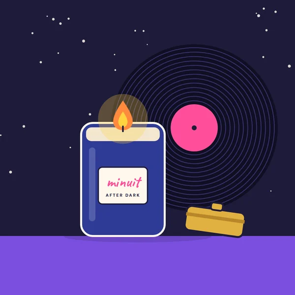
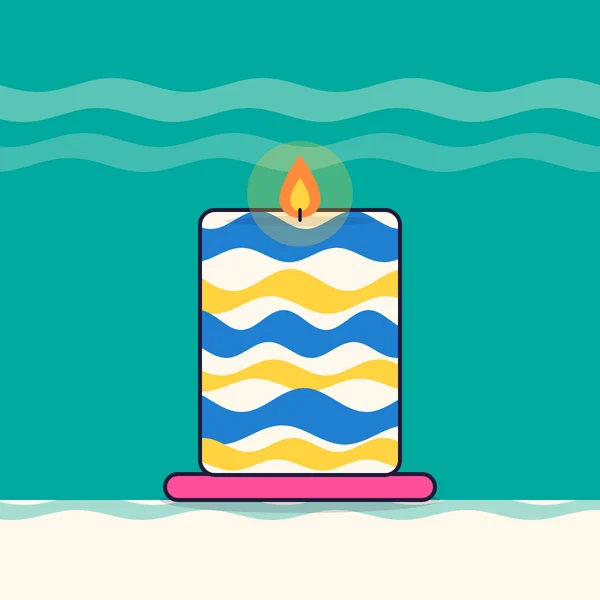
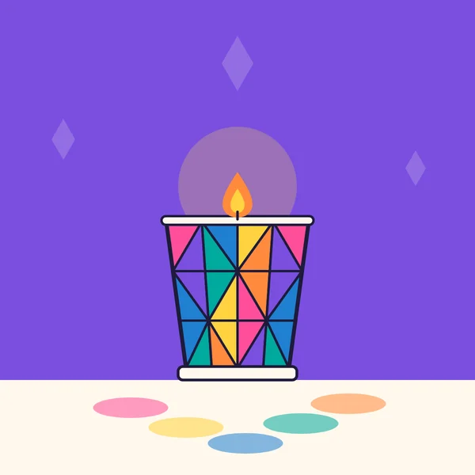
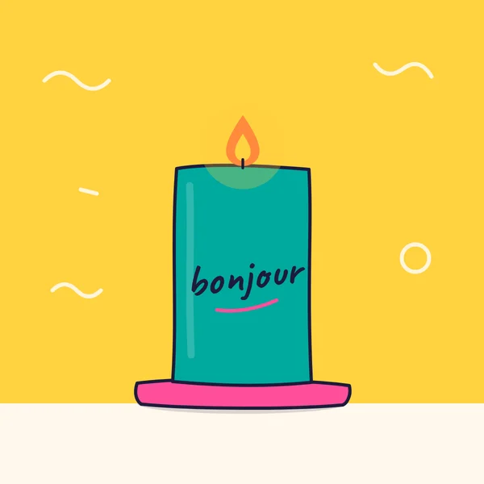
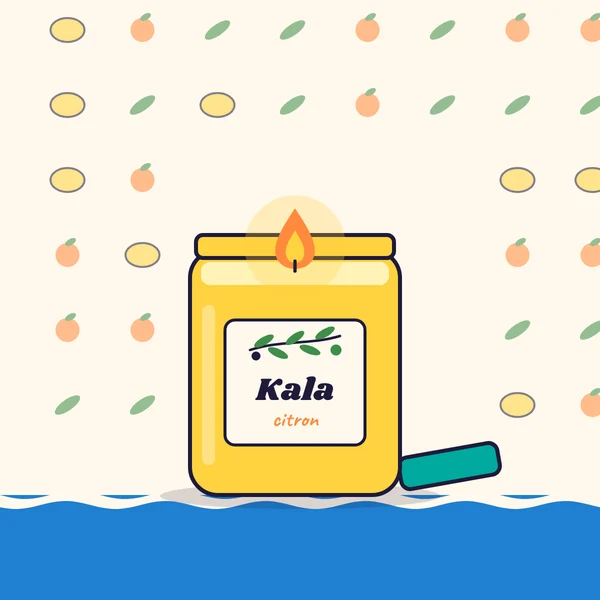

X'mas Cha Cha
Cha Cha Stripe
Pembe-beyaz çizgili uzun sütun mum.
[FİYAT]
Her siparişte bir Zazou kartpostalı [TUTAR] üzeri ücretsiz kargo
Favorilerin yalnızca bu tarayıcıda saklanır.
Pembe-beyaz çizgili uzun sütun mum.
[FİYAT]

Altın kapaklı lacivert cam kavanozda tek alev.
[FİYAT]

Mavi, sarı ve beyaz mermer desenli kalın sütun.
[FİYAT]

Renkli cam filmli votif mumluk.
[FİYAT] Tükendi

Üzerinde el yazısıyla “bonjour” yazan turkuaz mum.
[FİYAT]

Zeytin dalı etiketli limon sarısı kavanoz.
[FİYAT]
Pas encore.
Henüz favorin yok. Ürünlerdeki kalbe dokunarak ekleyebilirsin. Mağazaya git